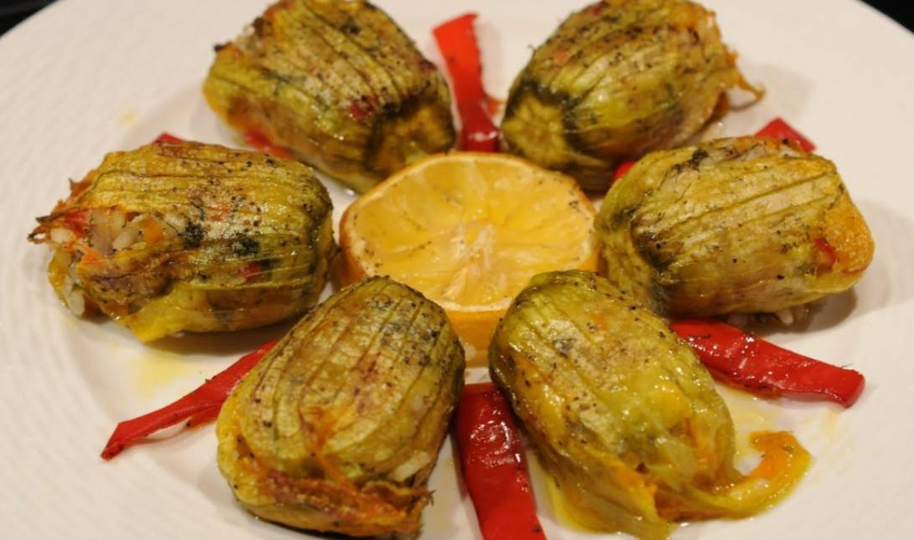

Anthoi

Description
Anthous holds a special place in Cypriot food heritage. Traditionally, it is prepared during the summer when zucchini flowers are in full bloom.
These vibrant yellow flowers are handpicked early in the morning when fresh and open, making them easier to stuff.
Anthous is more than just a dish; it represents Cypriot culture’s resourcefulness and culinary artistry.
Using simple, locally available ingredients, this dish transforms the ephemeral beauty of zucchini flowers into a lasting culinary experience.
Ingredients
60 Zucchini Flower Blooms
2 Cups Rice
1 Finely Chopped Onion
5 Tbs Finely Chopped Parsley
4 Tbs Finely Chopped Mint
1/2 Cup Pine Nuts
4 Tbs Olive Oil
1 Diced Tomato
1.5 Cup Grated Tomato
Steps
Place the flowers in a large bowl of cold water and remove the stems. Drain the same.
In a bowl, mix together the rice, onion, parsley, mint, basil, tomato, passata, pine nuts, pepper, olive oil, salt and cinnamon.
Using a spoon, stuff each flower with some mixture and fold over the ends of the petals.
Drizzle 2 tbs olive oil on the bottom of a large saucepan.
Arrange the flowers in a large saucepan in a circular pattern, side by side. It is better to use two saucepans, so there is only one level of flowers.
If you pile the flowers on top of each other, the rice may be uncooked and overcooked. If you are concerned, simply cut the recipe in half.
Pour 1.5 cups of water in each saucepan, so that the water comes up to about half the height of the zucchini flowers.
Place a large plate covering the flowers on top. Place the saucepan on the stove on medium heat, cooking for about 20-25 minutes until most of the liquid has been absorbed.